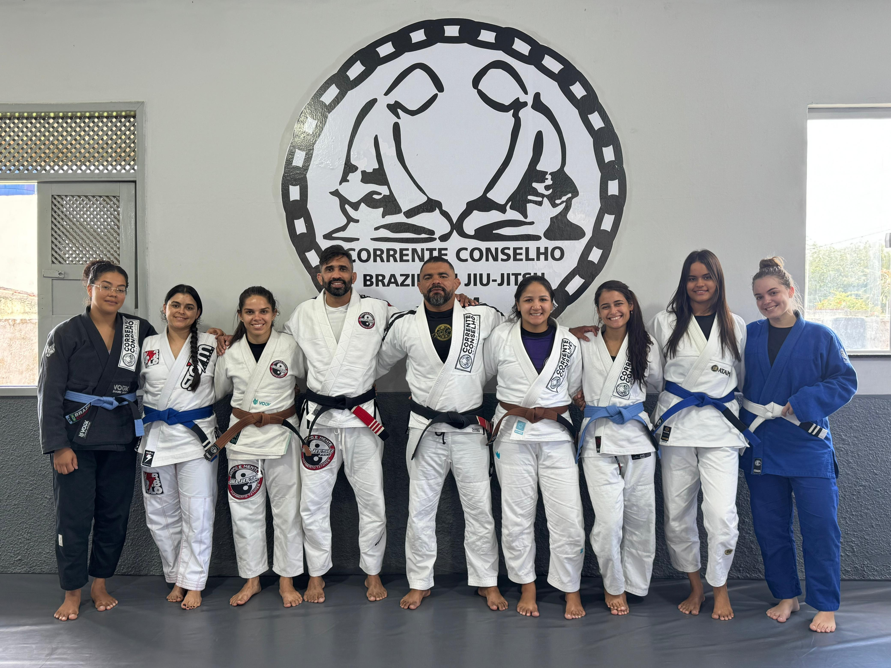
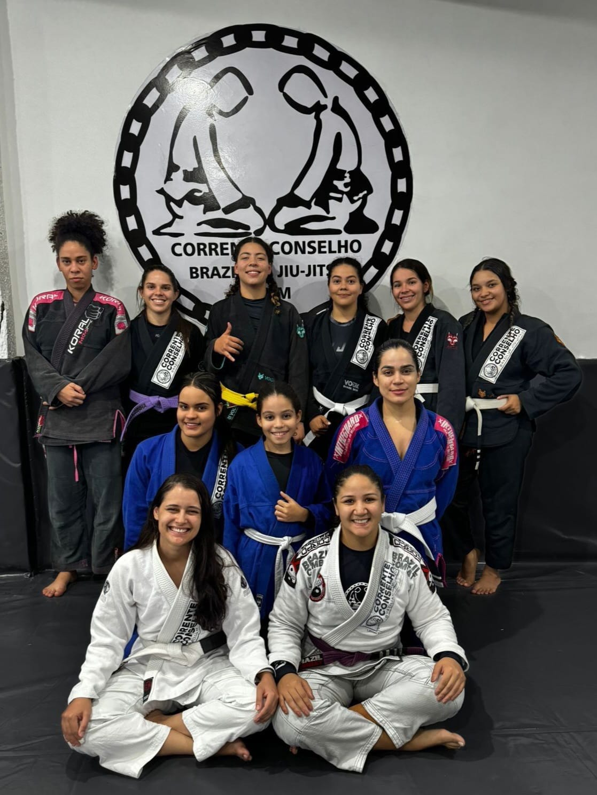
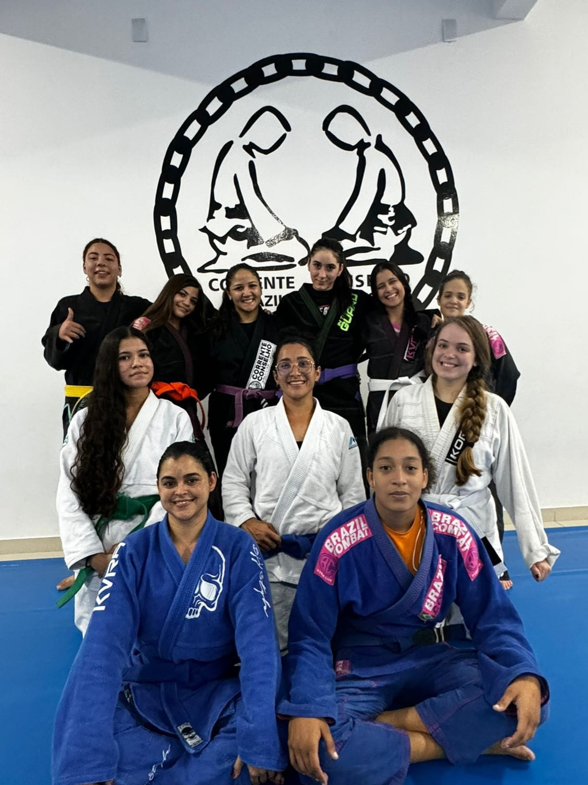
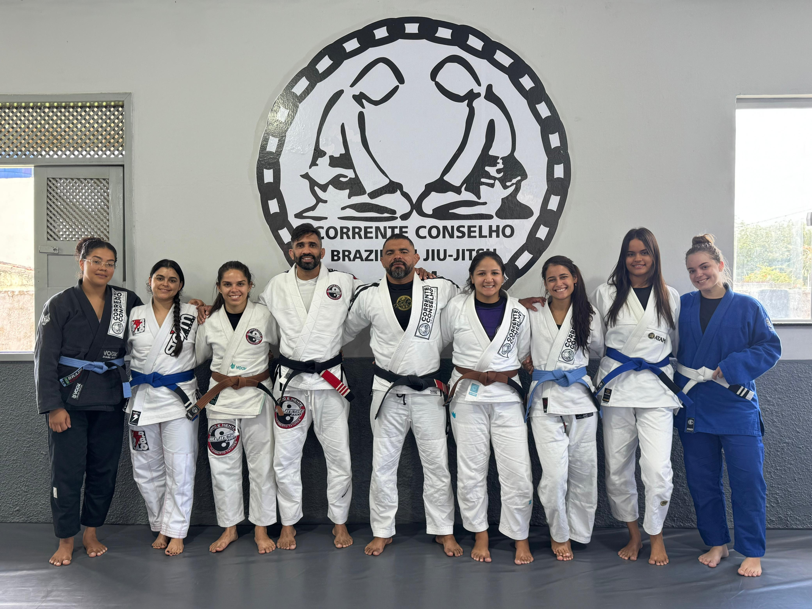
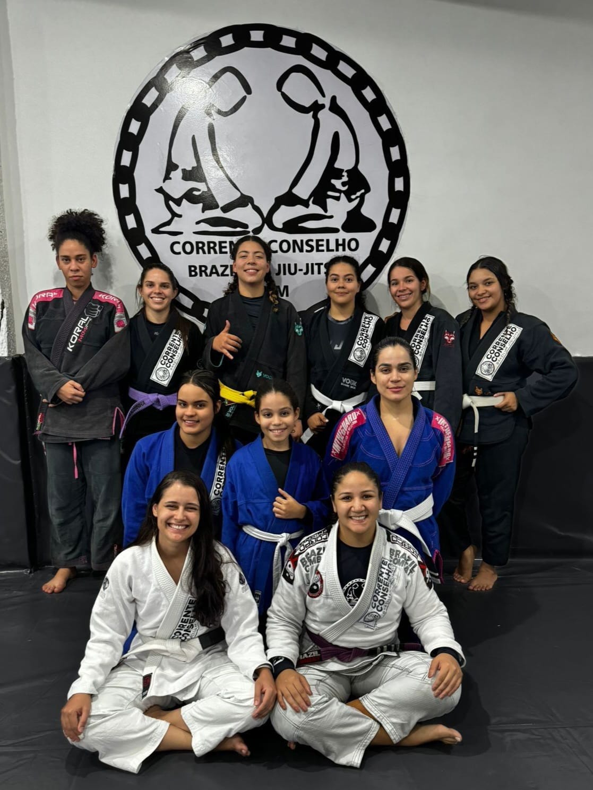
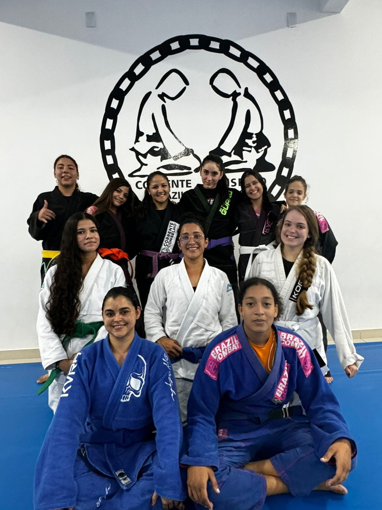

"Se você quer ser um leão,
deve treinar com leões."
- Carlos Gracie

Bem Vindo a Corrente Conselho
A Corrente Conselho nasceu da união entre garra, disciplina e propósito. Há anos, os tatames não são apenas um lugar de treino, mas um espaço onde caráter é forjado, limites são superados e pessoas evoluem juntas dentro e fora do jiu-jitsu. Aqui, suor, respeito e aprendizado caminham lado a lado. Cada treino carrega a identidade de uma equipe que não recua diante das dificuldades e se mantém firme, unida e resiliente. Sob a liderança do Sensei Neto Conselho, a busca pela evolução é constante.
Mais do que uma academia, a Corrente Conselho é uma família onde todos compartilham
conhecimento, defendem o
nome da equipe e crescem como guerreiros.
Somos Corrente Conselho.
E quem entra, faz parte. OSS.
Oque você encontra aqui?
Um ambiente de treino sério, focado em evolução real, respeito e superação diária dentro e fora dos tatames.
Treinamento de Verdade
Aqui o treino é levado a sério. Disciplina, constância e evolução real, respeitando o ritmo de cada aluno.
Melhora no condicionamento físico
No jiu-jitsu em decorrêncio da intensidade dos treinos, e da quantidade de rolas(rounds ou sessões de luta em si) o atleta melhora seu condicionamento.
Ambiente de Família
Mais que uma academia, uma equipe. Pessoas que se ajudam, se respeitam e crescem juntas dentro e fora do tatame.
Melhora na coordenação motora
Com o passar do tempo é notável a melhora a coordenação, antes tendo dificuldade em realizar movimentos básicos e depois executando-as com facilidade reverberando não somente no tatame mas na vida em forma de qualidade.
Jiu-Jitsu Kids
Disciplina, respeito e confiança desde cedo. Aqui as crianças crescem fortes no corpo e na mente.


Nossas Unidades
Mais do que academias, somos uma equipe presente em diferentes cidades. A mesma essência, o mesmo compromisso.

📍Euclides da Cunha -BA
Treino sério, respeito e evolução diária.

📍Monte Santo - BA
Disciplina no treino. União fora dele.

📍Cansanção - BA
Onde o treino vira compromisso de vida.
"Eu sou mulher, posso treinar?"
Não só pode, como deve.
No Jiu-Jitsu, força bruta não manda.
Técnica, alavanca, tempo e inteligência corporal valem
mais.
Por isso o BJJ sempre foi e continua sendo um dos esportes de luta mais acessíveis e eficazes
para mulheres.
 






Qual a real importância disso?
O mundo não é gentil.
A violência existe. Fingir que não existe não protege ninguém.
Aprender a se defender não é viver com medo é recusar a impotência.
No jiu-jitsu, você aprende a manter a calma sob pressão, sair de posições
de desvantagem, controlar alguém maior e mais forte e confiar no próprio corpo.
Isso não fica só no tatame. A postura muda. O olhar muda.
Os limites ficam claros.
Você não treina apenas para se defender de alguém.
Você treina para não ser refém da própria insegurança.
Jiu-jitsu não tira feminilidade. Não endurece. Não masculiniza.
Fortalece física e mentalmente.
No tatame não existe sexo frágil.
Existe quem treina e quem não treina.

Pronto pra começar?
A decisão é simples: continuar adiando ou começar agora. Fale direto com a equipe, tire suas dúvidas e dê o primeiro passo.
Falar no WhatsApp • Atendimento rápido